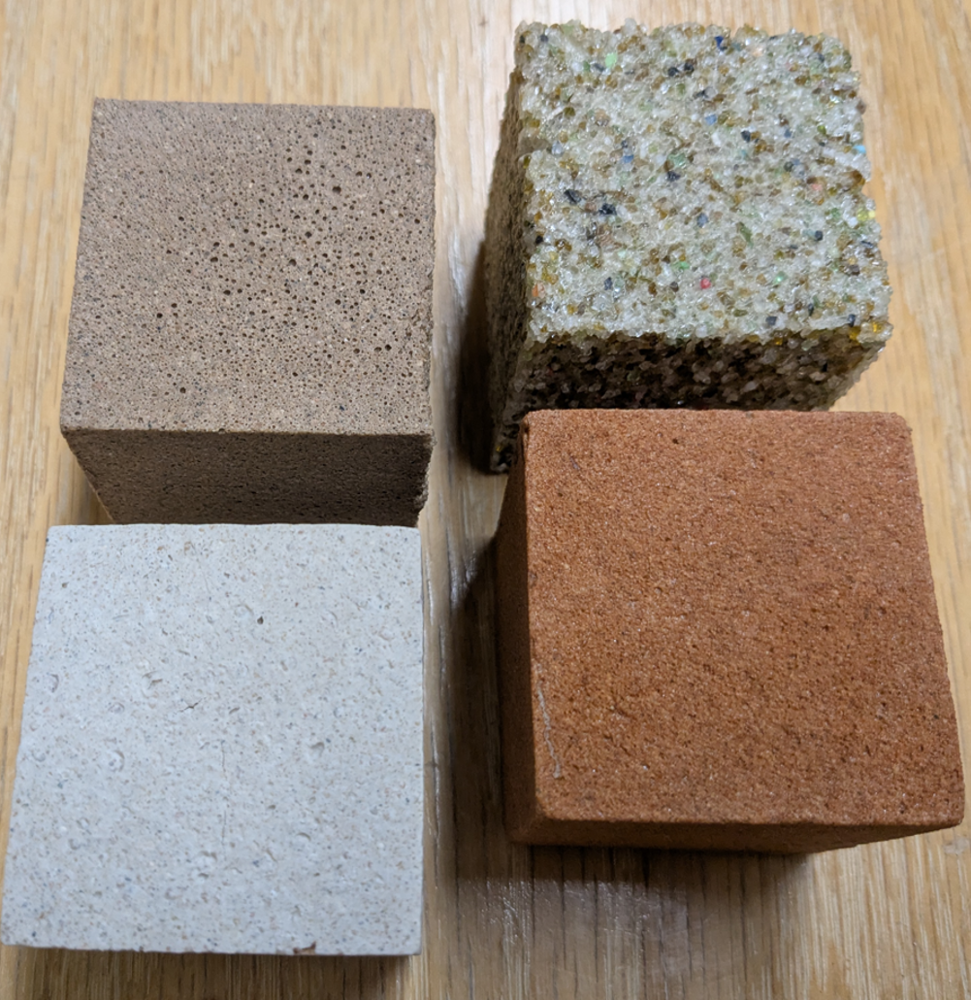

01
Sustainable & Recycled Concrete
Recycled aggregates, reclaimed asphalt pavement, waste-derived fibers, and circular construction materials.
The SHI Lab develops sustainable, high-performance construction materials through recycling, advanced cementitious composites, biopolymers, and infrastructure innovation.
We connect materials science, structural performance, circular economy, and field implementation to rethink how infrastructure is built.
Recycled aggregates, reclaimed asphalt pavement, waste-derived fibers, and circular construction materials.
Cost-effective ultra-high-performance concrete, recycled steel fibers, toughness, durability, and infrastructure applications.
Reversible construction composites designed for strength, reuse, material recovery, and resource-limited environments.
Lunar and Martian construction materials, geopolymer systems, additive manufacturing, and in-situ resource utilization.
Advancing recyclable biopolymer composite materials and entrepreneurial education for construction in resource-limited environments.
The project investigates recyclable biopolymer construction materials that combine engineering performance with reuse and resource recovery.
View funded projectsSelected programs span bridge materials, pavements, coastal infrastructure, technology transfer, and space construction.
Translational research connecting sustainable reinforcement technology with practical infrastructure applications.
Durable material systems for infrastructure exposed to aggressive coastal environments.
Geopolymers and additive-manufacturing concepts using locally available extraterrestrial resources.

Our work explores new cementitious and composite material systems using alternative, recycled, and resource-efficient constituents to improve sustainability and expand the possibilities of infrastructure materials.
See our research themesSHI Lab research also contributes to technology translation and commercialization. Circle Concrete Tech advances sustainable concrete technologies, including Plient recycled steel fibers for concrete infrastructure applications.
Visit Circle Concrete Tech →A selection of recent scholarly work. Visit the Publications page for more.